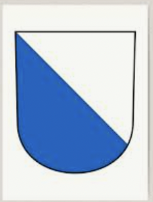
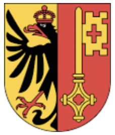

WP 2021 -Hafta 03- Ödev
Bu haftaki derste daha fazla HTML attributllerini tanidik ve biraz daha detaylarina baktik ve HTML Entities`ler ile tanistik. Ayrica form ve kullanicilarin bilgi girebilmesi icin input elemanlarini tanidi. Asagida "Hafta 04" Konseptler ve Linkler" bölümünde bu hafta istediklerimizi özet olarak bulabilirsiniz.
| Isim | Kisaltma | En büyük sehri | Nüfusu | Konusulan dil | Bayragi | Sayfasi | |||||
|---|---|---|---|---|---|---|---|---|---|---|---|
| Zürich | ZH | Zürich | 1'504'346 | Almanca |  | zh.ch | |||||
| Cenevre | GE | Cenevre | 495'249 | Fransizca |  | ge.ch | |||||
| Bern | BE | Bern | 1'031'126 |
Almanca, Fransizca |
be.ch | ||||||
| ... | |||||||||||
| Toplam nufüs | 8'039'060 | ||||||||||